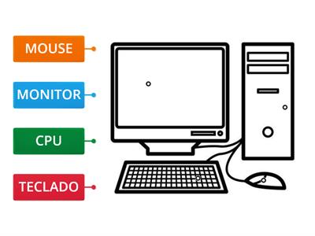
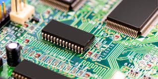
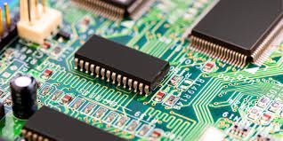

Historia Del Hardware
Presentado Por: Juan Sebastian Garcia Redondo, Nicolas Velasquez Y Juan David Pardo
Década de 1940

Durante esta década, las primeras computadoras electrónicas comenzaron a utilizar tubos de vacío como componentes principales. Estas computadoras ocupaban habitaciones enteras y eran muy grandes y costosas.
Computadora Con tubos de vacio Como componentes electronicos

Década de 1950
En esta década, se introdujeron las primeras computadoras comerciales de gran escala. Se continuó utilizando tubos de vacío, pero se desarrollaron métodos de almacenamiento magnético, como cintas magnéticas y tambores magnéticos.
Monitores
Se desarrollan los primeros monitores de tubo de rayos catódicos (CRT) para visualizar información generada por computadoras. Estos monitores utilizaban tubos de vacío y se limitaban a mostrar texto y gráficos básicos.
Década de 1960
En esta época, se comenzaron a utilizar transistores en lugar de tubos de vacío. Los transistores eran más pequeños, más rápidos y más confiables, lo que permitió la creación de computadoras más compactas y potentes.
Década de 1970
 

Durante esta década, se produjo una transición importante hacia los circuitos integrados (chips). Los circuitos integrados permitieron incluir varios componentes en un solo chip, lo que resultó en una mayor eficiencia y reducción de costos.
Monitores
Se introducen los monitores CRT en color, lo que permite una representación visual más vívida y detallada. Estos monitores se vuelven populares en aplicaciones gráficas y de diseño.
Década de 1980
En esta década, se popularizó el uso de microprocesadores. Los microprocesadores, como el Intel 8086 y el Motorola 68000, permitieron un procesamiento más rápido y se convirtieron en el corazón de las computadoras personales.
Monitores
Los monitores CRT experimentan mejoras significativas en la calidad de la imagen y la resolución. Se introducen los primeros monitores de alta resolución, permitiendo una visualización más nítida y detallada.
Década de 1990
Durante esta década, se produjo un rápido avance en la capacidad de almacenamiento. Los discos duros se volvieron más grandes y más accesibles, mientras que los discos ópticos, como los CD y los DVD, se convirtieron en medios de almacenamiento comunes.
Monitores
Se desarrollan monitores CRT más delgados y livianos, lo que facilita su colocación y transporte. Además, se populariza el estándar VGA (Video Graphics Array), que mejora la calidad de imagen y permite una mayor variedad de colores.
Década de 2000
En esta época, se popularizaron las memorias flash, como las unidades USB y las tarjetas de memoria. Estas memorias ofrecían capacidades más grandes, tiempos de acceso más rápidos y mayor durabilidad en comparación con las tecnologías de almacenamiento anteriores.
Monitores
Se comienza a adoptar la tecnología de pantallas de cristal líquido (LCD) en monitores. Los monitores LCD son más delgados, livianos y eficientes energéticamente en comparación con los CRT. Los monitores LCD experimentan mejoras en la calidad de imagen, resolución y tiempo de respuesta. Se introducen monitores de pantalla ancha (16:9) que se adaptan a la creciente demanda de visualización de contenido multimedia.
Década de 2010
Durante esta década, se produjo un aumento en el uso de unidades de estado sólido (SSD). Los SSD ofrecen velocidades de lectura y escritura mucho más rápidas en comparación con los discos duros tradicionales, lo que resulta en un mejor rendimiento general del sistema.
Monitores
Se desarrollan monitores LCD con retroiluminación LED, que ofrecen una mejor calidad de imagen, mayor brillo y un consumo de energía más eficiente. También se popularizan los monitores con tecnología táctil, que permiten la interacción directa con la pantalla.
Actualidad
En la actualidad se ha producido un enfoque en el desarrollo de componentes más eficientes y de menor consumo de energía. Además, se ha avanzado en tecnologías como la realidad virtual, la inteligencia artificial y el cómputo en la nube, lo que ha influido en la evolución de los componentes de las computadoras.
Monitores
Se producen avances en la tecnología de pantalla, como monitores OLED (diodo orgánico emisor de luz) y monitores con resolución 4K y superior. Estos monitores ofrecen una calidad de imagen excepcional y una reproducción de color precisa.Además, es importante mencionar que en la actualidad también se han desarrollado monitores curvos, monitores con frecuencia de actualización alta para juegos (como 144Hz y 240Hz) y monitores con capacidades HDR (High Dynamic Range), que mejoran aún más la experiencia visual.